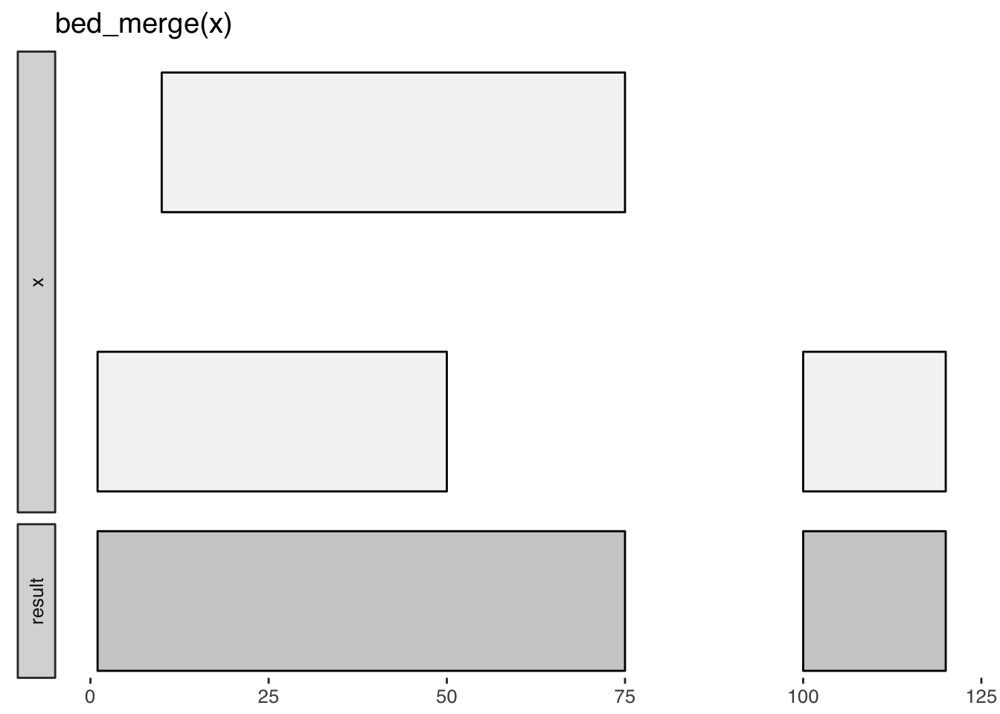
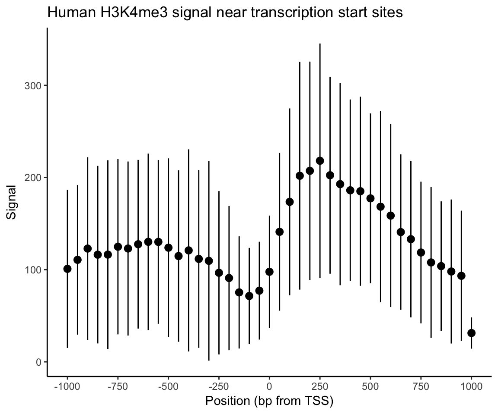
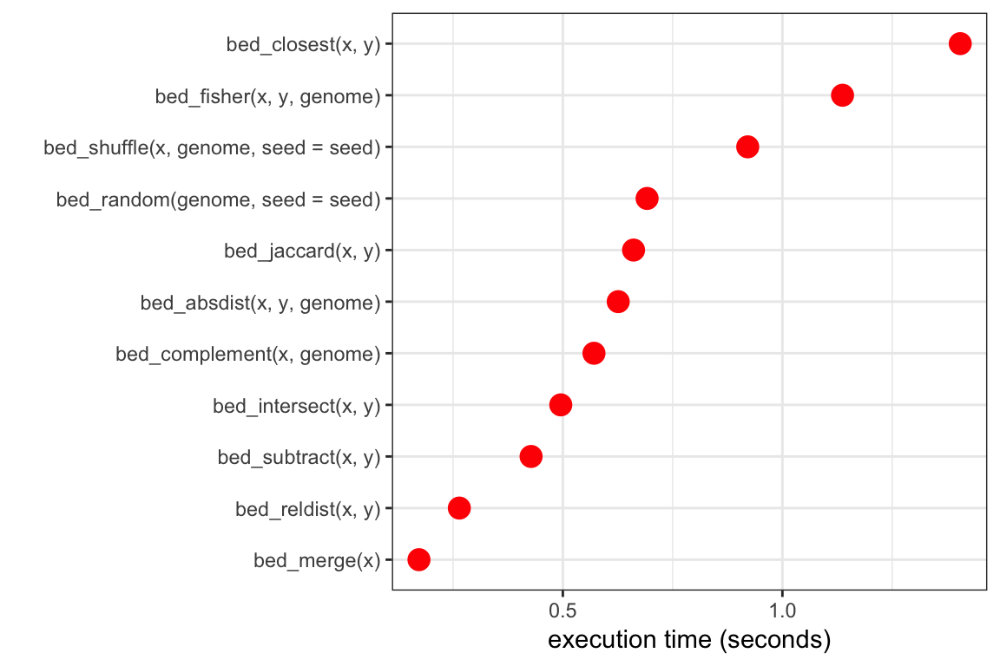

valr overview
2017-05-30
Why valr?
Why another tool set for interval manipulations? There are several other software packages available for genome interval analysis. However, based on our experiences teaching genome analysis, we were motivated to develop a toolset that:
- Combines analysis and visualization in RStudio.
- Can be used to generate reports with Rmarkdown.
- Is highly extensible. New tools are quickly implemented on the R side.
- Leverages the “modern R” syntax, using
dplyrand the pipe operator frommagrittr(%>%). - Maximizes speed by implementing compute-intensive algorithms in
Rcpp. - Facilitates interactive visulaizations with
shiny.
valr can currently be used for analysis of pre-processed data in BED and related formats. We plan to support BAM and VCF files soon via tabix indexes.
Familiar tools, all within R
The functions in valr have similar names to their BEDtools counterparts, and so will be familiar to users coming from the BEDtools suite. Similar to pybedtools, valr has a terse syntax:
library(valr)
library(dplyr)
snps <- read_bed(valr_example('hg19.snps147.chr22.bed.gz'), n_fields = 6)
genes <- read_bed(valr_example('genes.hg19.chr22.bed.gz'), n_fields = 6)
# find snps in intergenic regions
intergenic <- bed_subtract(snps, genes)
# distance from intergenic snps to nearest gene
nearby <- bed_closest(intergenic, genes)
nearby %>%
select(starts_with('name'), .overlap, .dist) %>%
filter(abs(.dist) < 1000)
#> # A tibble: 285 x 4
#> name.x name.y .overlap .dist
#> <chr> <chr> <int> <int>
#> 1 rs2261631 P704P 0 -267
#> 2 rs570770556 POTEH 0 -912
#> 3 rs538163832 POTEH 0 -952
#> 4 rs9606135 TPTEP1 0 -421
#> 5 rs11912392 ANKRD62P1-PARP4P3 0 104
#> 6 rs8136454 BC038197 0 355
#> 7 rs5992556 XKR3 0 -455
#> 8 rs114101676 GAB4 0 473
#> 9 rs62236167 CECR7 0 261
#> 10 rs5747023 CECR1 0 -386
#> # ... with 275 more rowsInput data
valr assigns common column names to facilitate comparisons between tbls. All tbls will have chrom, start, and end columns, and some tbls from multi-column formats will have additional pre-determined column names. See the read_bed() documentation for details.
Remote databases
Remote databases can be accessed with db_ucsc() (to access the UCSC Browser) and db_ensembl() (to access Ensembl databases).
# access the `refGene` tbl on the `hg38` assembly.
if(require(RMySQL)) {
ucsc <- db_ucsc('hg38')
tbl(ucsc, 'refGene')
}Visual documentation
The bed_glyph() tool illustrates the results of operations in valr, similar to those found in the BEDtools documentation. This glyph shows the result of intersecting x and y intervals with bed_intersect():
x <- tibble::tribble(
~chrom, ~start, ~end,
'chr1', 25, 50,
'chr1', 100, 125
)
y <- tibble::tribble(
~chrom, ~start, ~end,
'chr1', 30, 75
)
bed_glyph(bed_intersect(x, y))
And this glyph illustrates bed_merge():
x <- tibble::tribble(
~chrom, ~start, ~end,
'chr1', 1, 50,
'chr1', 10, 75,
'chr1', 100, 120
)
bed_glyph(bed_merge(x))
Reproducible reports
valr can be used in RMarkdown documents to generate reproducible work-flows for data processing. Because valr is reasonably fast (see the benchmarks), we now use it in lieu of other tools for exploratory analysis of genomic data sets in R.
Command-line tools like BEDtools and bedops can be used in reproducible workflows (e.g., with snakemake), but it is cumbersome to move from command-line tools to exploratory analysis and plotting software. pybedtools can be used within ipython notebooks to accomplish a similar goal, but others have pointed out issues with this approach, including clunky version control. Because RMarkdown files are text files, they are readily kept under version control. Moreover, new features in RStudio (e.g. notebook viewing) enable similar functionality to ipython.
Grouping data
The group_by function in dplyr can be used to perform fuctions on subsets of single and multiple data_frames. Functions in valr leverage grouping to enable a variety of comparisons. For example, intervals can be grouped by strand to perform comparisons among intervals on the same strand.
x <- tibble::tribble(
~chrom, ~start, ~end, ~strand,
'chr1', 1, 100, '+',
'chr1', 50, 150, '+',
'chr2', 100, 200, '-'
)
y <- tibble::tribble(
~chrom, ~start, ~end, ~strand,
'chr1', 50, 125, '+',
'chr1', 50, 150, '-',
'chr2', 50, 150, '+'
)
# intersect tbls by strand
x <- group_by(x, strand)
y <- group_by(y, strand)
bed_intersect(x, y)
#> # A tibble: 2 x 8
#> chrom start.x end.x strand.x start.y end.y strand.y .overlap
#> <chr> <dbl> <dbl> <chr> <dbl> <dbl> <chr> <int>
#> 1 chr1 1 100 + 50 125 + 50
#> 2 chr1 50 150 + 50 125 + 75Comparisons between intervals on opposite strands are done using the flip_strands() function:
x <- group_by(x, strand)
y <- flip_strands(y)
y <- group_by(y, strand)
bed_intersect(x, y)
#> # A tibble: 3 x 8
#> chrom start.x end.x strand.x start.y end.y strand.y .overlap
#> <chr> <dbl> <dbl> <chr> <dbl> <dbl> <chr> <int>
#> 1 chr2 100 200 - 50 150 - 50
#> 2 chr1 1 100 + 50 150 + 50
#> 3 chr1 50 150 + 50 150 + 100Both single set (e.g. bed_merge()) and multi set operations will respect groupings in the input intervals.
Getting started
Meta-analysis
This demonstration illustrates how to use valr tools to perform a “meta-analysis” of signals relative to genomic features. Here we to analyze the distribution of histone marks surrounding transcription start sites.
First we load libraries and relevant data.
# `valr_example()` identifies the path of example files
bedfile <- valr_example('genes.hg19.chr22.bed.gz')
genomefile <- valr_example('hg19.chrom.sizes.gz')
bgfile <- valr_example('hela.h3k4.chip.bg.gz')
genes <- read_bed(bedfile, n_fields = 6)
genome <- read_genome(genomefile)
y <- read_bedgraph(bgfile)Then we generate 1 bp intervals to represent transcription start sites (TSSs). We focus on + strand genes, but - genes are easily accomodated by filtering them and using bed_makewindows() with reversed window numbers.
# generate 1 bp TSS intervals, `+` strand only
tss <- genes %>%
filter(strand == '+') %>%
mutate(end = start + 1)
# 1000 bp up and downstream
region_size <- 1000
# 50 bp windows
win_size <- 50
# add slop to the TSS, break into windows and add a group
x <- tss %>%
bed_slop(genome, both = region_size) %>%
bed_makewindows(genome, win_size)
x
#> # A tibble: 13,530 x 7
#> chrom start end name score strand .win_id
#> <chr> <int> <int> <chr> <chr> <chr> <int>
#> 1 chr22 16161065 16161115 LINC00516 3 + 1
#> 2 chr22 16161115 16161165 LINC00516 3 + 2
#> 3 chr22 16161165 16161215 LINC00516 3 + 3
#> 4 chr22 16161215 16161265 LINC00516 3 + 4
#> 5 chr22 16161265 16161315 LINC00516 3 + 5
#> 6 chr22 16161315 16161365 LINC00516 3 + 6
#> 7 chr22 16161365 16161415 LINC00516 3 + 7
#> 8 chr22 16161415 16161465 LINC00516 3 + 8
#> 9 chr22 16161465 16161515 LINC00516 3 + 9
#> 10 chr22 16161515 16161565 LINC00516 3 + 10
#> # ... with 13,520 more rowsNow we use the .win_id group with bed_map() to caluclate a sum by mapping y signals onto the intervals in x. These data are regrouped by .win_id and a summary with mean and sd values is calculated.
# map signals to TSS regions and calculate summary statistics.
res <- bed_map(x, y, win_sum = sum(value, na.rm = TRUE)) %>%
group_by(.win_id) %>%
summarize(win_mean = mean(win_sum, na.rm = TRUE),
win_sd = sd(win_sum, na.rm = TRUE))
res
#> # A tibble: 41 x 3
#> .win_id win_mean win_sd
#> <int> <dbl> <dbl>
#> 1 1 100.8974 85.83423
#> 2 2 110.6829 81.13521
#> 3 3 122.9070 99.09635
#> 4 4 116.2800 96.30098
#> 5 5 116.3500 102.33773
#> 6 6 124.9048 95.08887
#> 7 7 122.9437 94.39792
#> 8 8 127.5946 91.47407
#> 9 9 130.2051 95.71309
#> 10 10 130.1220 88.82809
#> # ... with 31 more rowsFinally, these summary statistics are used to construct a plot that illustrates histone density surrounding TSSs.
library(ggplot2)
x_labels <- seq(-region_size, region_size, by = win_size * 5)
x_breaks <- seq(1, 41, by = 5)
sd_limits <- aes(ymax = win_mean + win_sd, ymin = win_mean - win_sd)
ggplot(res, aes(x = .win_id, y = win_mean)) +
geom_point() + geom_pointrange(sd_limits) +
scale_x_continuous(labels = x_labels, breaks = x_breaks) +
xlab('Position (bp from TSS)') + ylab('Signal') +
ggtitle('Human H3K4me3 signal near transcription start sites') +
theme_classic()
Interval statistics
Estimates of significance for interval overlaps can be obtained by combining bed_shuffle(), bed_random() and the sample_ functions from dplyr with interval statistics in valr.
Here we examine the overlap of repeat classes in the human genome (on chr22 only, for simplicity) using bed_jaccard().
library(purrr)
library(tidyr)
repeats <- read_bed(valr_example('hg19.rmsk.chr22.bed.gz'), n_fields = 6)
genome <- read_genome(valr_example('hg19.chrom.sizes.gz'))
shuffle_intervals <- function(n, .data, genome) {
replicate(n, bed_shuffle(.data, genome, seed = 1010486), simplify = FALSE) %>%
bind_rows(.id = 'rep') %>%
group_by(rep) %>% nest()
}
shuffled <- shuffle_intervals(n = 100, repeats, genome) %>%
mutate(jaccard = data %>%
map(bed_jaccard, repeats) %>%
map_dbl("jaccard"))
shuffled
#> # A tibble: 100 x 3
#> rep data jaccard
#> <chr> <list> <dbl>
#> 1 1 <tibble [10,000 x 6]> 0.0004355887
#> 2 2 <tibble [10,000 x 6]> 0.0004355887
#> 3 3 <tibble [10,000 x 6]> 0.0004355887
#> 4 4 <tibble [10,000 x 6]> 0.0004355887
#> 5 5 <tibble [10,000 x 6]> 0.0004355887
#> 6 6 <tibble [10,000 x 6]> 0.0004355887
#> 7 7 <tibble [10,000 x 6]> 0.0004355887
#> 8 8 <tibble [10,000 x 6]> 0.0004355887
#> 9 9 <tibble [10,000 x 6]> 0.0004355887
#> 10 10 <tibble [10,000 x 6]> 0.0004355887
#> # ... with 90 more rowsBenchmarks
Certain algorithms in valr were implemented in Rcpp to enable fluid interactive analysis. This graph illustrates the timing of functions in valr for two sets of 1 million random 1 kilobase intervals from the hg19 genome.

API
Function names are similar to their their BEDtools counterparts, with some additions.
Reading data
BED and related files are read with
read_bed(),read_bed12(),read_bedgraph(),read_narrowpeak()andread_broadpeak().Genome files containing chromosome name and size information are loaded with
read_genome().VCF files are loaded with
read_vcf().
Transforming single interval sets
Intervals are ordered with
dplyr::arrange(). See?sortingfor examples.Interval coordinates are adjusted with
bed_slop()andbed_shift(), and new flanking intervals are created withbed_flank().Nearby intervals are combined with
bed_merge()and identified (but not merged) withbed_cluster().Intervals not covered by a query are created with
bed_complement().
Comparing multiple interval sets
Find overlaps between two sets of intervals with
bed_intersect().Apply functions to selected columns for overlapping intervals with
bed_map().Remove intervals based on overlaps between two files with
bed_subtract().Find overlapping intervals within a window with
bed_window().Find the closest intervals independent of overlaps with
bed_closest().
Randomizing intervals
Generate random intervals from an input genome with
bed_random().Shuffle the coordinates of input intervals with
bed_shuffle().Random sampling of input intervals is done with the
sample_function family indplyr.
Interval statistics
Quantify overlaps between two sets of intervals with
bed_fisher().Quantify relative and absolute distances between sets of intervals with
bed_reldist()andbed_absdist().Quantify extent of overlap between two sets of intervals with
bed_jaccard()orbed_projection().
Utilities
Visualize the actions of valr functions with
bed_glyph().Constrain intervals to a genome reference with
bound_intervals().Subdivide intervals with
bed_makewindows().Convert BED12 to BED6 format with
bed12_to_exons().Calculate spacing between intervals with
interval_spacing().